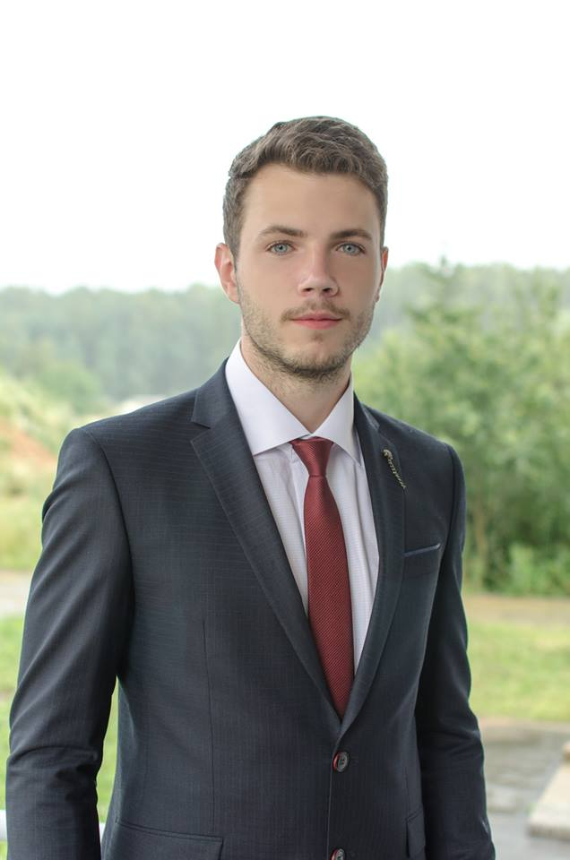

- Babodey Igor
- Mobile number +375 29 368 92 00
- Summary. I have some goals. First of all, I'm learning programming because I would like to test myself in completely new field of activity for me. In the very beginning I chose front-end web development. I found it very interesting because of interactive web applications for different platforms, especially for mobile devices. When I have strong skills in front-end, I'll try myself on a server side of development. In general, I enjoy working process as a web developer, expect exciting projects, competitive salary and flexible work schedule. I'm workaholic by my nature.
- I have some skills in
- HTML5
- CSS3 (Grid, Bootstrap)
- JS
- Git
- SublimeText, VSCode
- I finished HTML and CSS courses in 2018. I'm learning programming by using Codecademy and reading the books.
- Education - BSU(chemical faculty), IBMT(economic faculty).
- I have some skills in English, also have a sertificate with B1+ knowledge level.